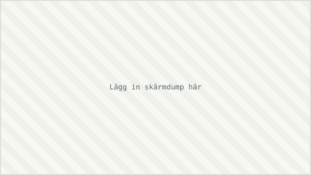

Bevis på mitt arbete
Konkreta exempel på hur jag jobbar, hämtade från verkliga uppdrag. Kanban-boards är bara en av flera kategorier. Byt platshållarna nedan mot skärmdumpar (avidentifiera kund-/företagsnamn) och korta videos.


[Team/kontext, t.ex. "Plattformsteam"]
Redesignade board-kolumner, satte WIP-gränser och införde swimlanes per prioritet för att synliggöra flaskhalsar i review.

Flödesvisualisering för tre team
Byggde dashboards som visualiserade flöde, flaskhalsar och överlämningar, vilket hjälpte team och intressenter upptäcka problem tidigare, innan arbete föll mellan stolarna.

Planning Poker i Azure DevOps
Introducerade en strukturerad Planning Poker-approach som ökade teamets deltagande, förbättrade skattningsprecision och stärkte den gemensamma förståelsen för arbetsuppgifter.
Från tyst offshore-team till engagerat team
Coachade ett tystlåtet offshore-team till ett engagerat, samarbetande team genom strukturerade 1-on-1s och teamcoaching enligt GROW, vilket resulterade i tidigare dialog med Product Owner.
Order-till-leverans-flödet
Ledde ett processförbättringsinitiativ med en strukturerad RACI-modell och värdedrivna KPI:er i PowerBI. Ökad transparens, minskade förseningar och stärkt ansvarstagande mellan team.


Team Health Check-In
Byggde och specificerade en egen webbapp för teamhälsa: anonyma check-ins, trendgrafer och en admin-dashboard, komplett med roller, datamodell och en prioriterad backlog av framtida funktioner. Samma produkttänk som Product Owner-rollen, fast jag byggde den själv.